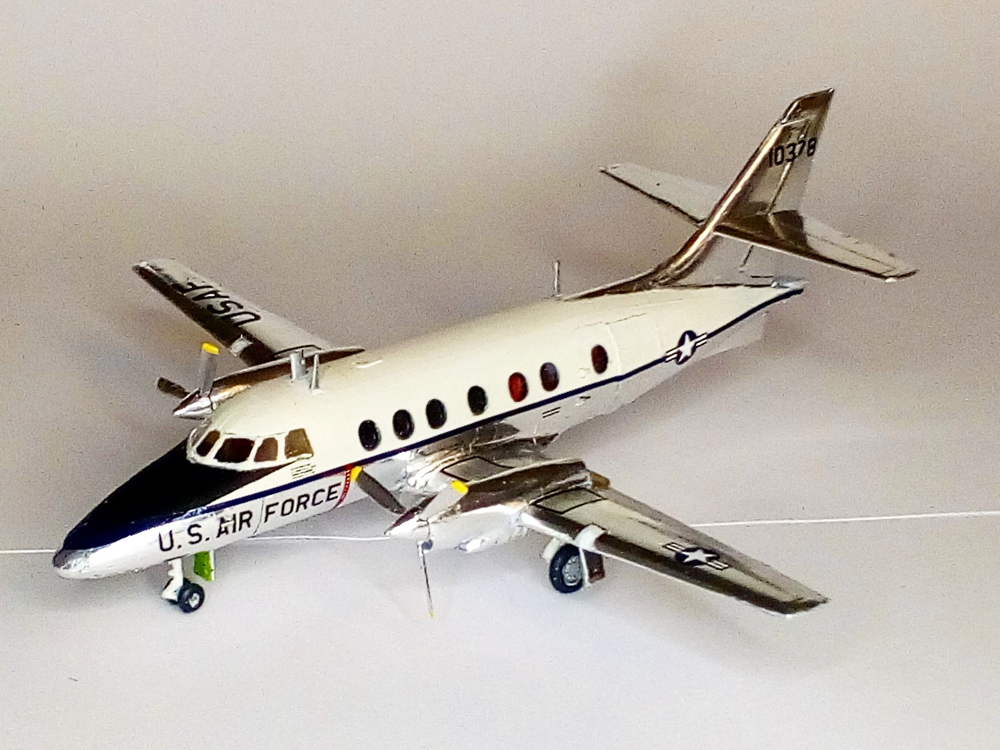

Aerei · scale model archive
Handley Page Jetstream
Handley Page Jetstream — Scale: 1/72. Kit; Airfix Finally a way to correctly represent bare aluminum in models using kitchen foil, quite happy about that…

Photo gallery
English description
Kit; Airfix
Finally a way to correctly represent bare aluminum in models using kitchen foil, quite happy about that
#1/72 #Airfix
Descrizione italiana
Finally una way una correctly represent alluminio naturale in modellos using kitchen foil, piuttosto happy about che.